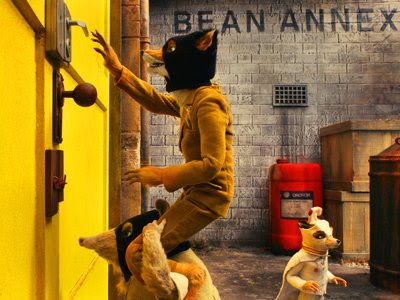
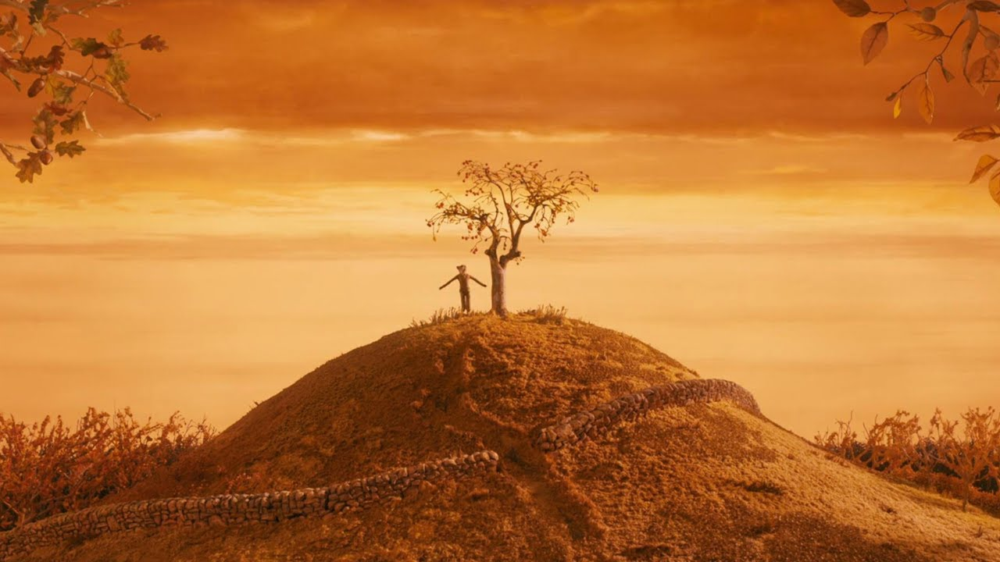

2009
Fantastic Mr. Fox


2009


A clever fox, tempted to return to his thieving ways, raids three wealthy farmers’ farms. When the farmers strike back, he must outsmart them to protect his family and friends. A witty, adventurous, and heartwarming stop-motion tale.
George Clooney as Mr. Fox, Meryl Streep as Mrs. Fox, Jason Schwartzman as their son Ash, Bill Murray as Badger, Willem Dafoe as Rat, Michael Gambon as Franklin Bean, Harry Shearer as Bunce, Adam Goldberg as Kristofferson Bunce, and Robin Hurlstone as Boggis.
Cristal for Best Feature Film and the Audience Award at the Annecy International Animated Film Festival, Best Original Film Score of the Year at the World Soundtrack Awards, Nominated for the Academy Award for Best Animated Feature and Best Original Score